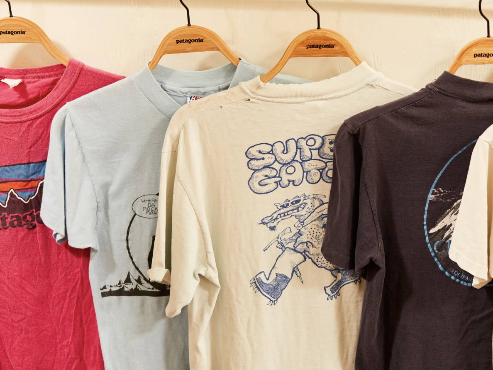
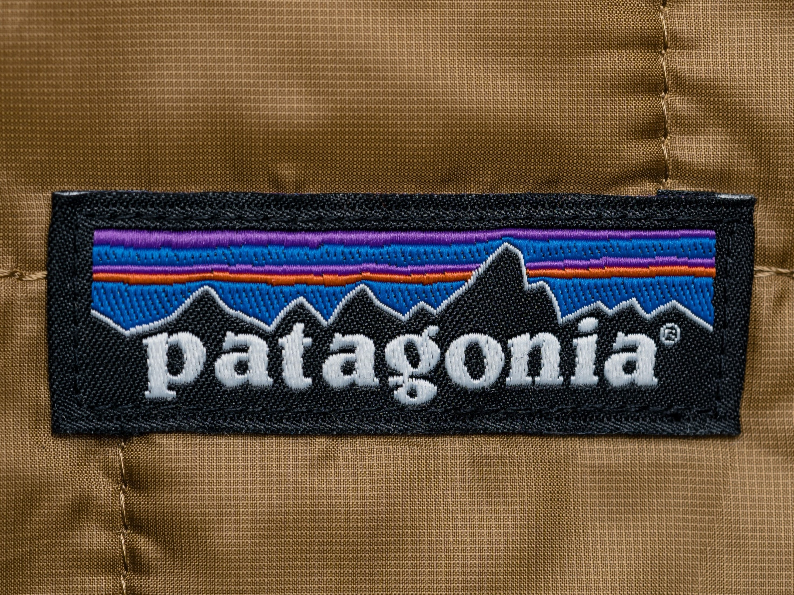
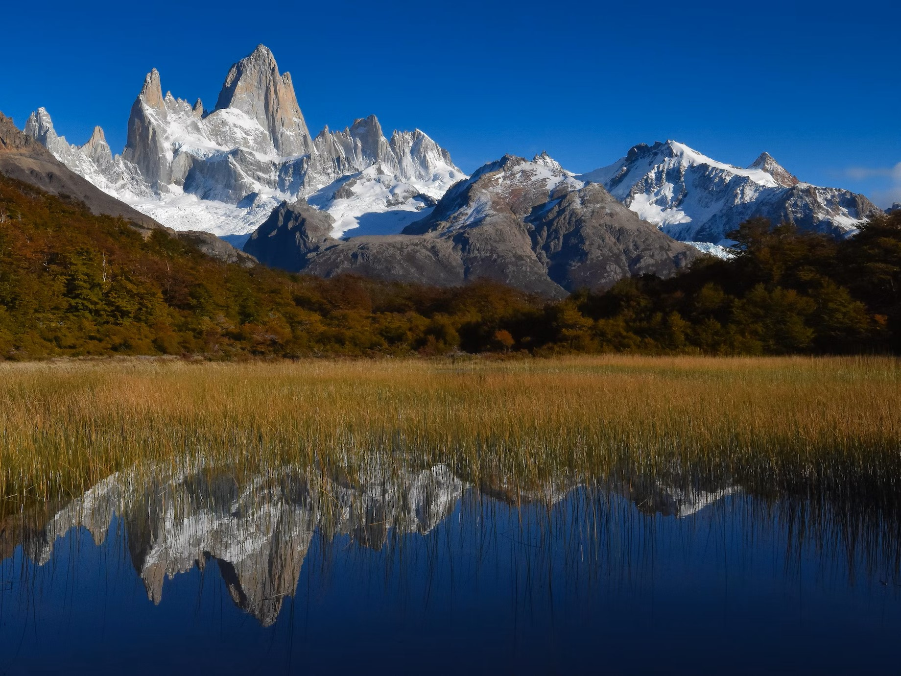
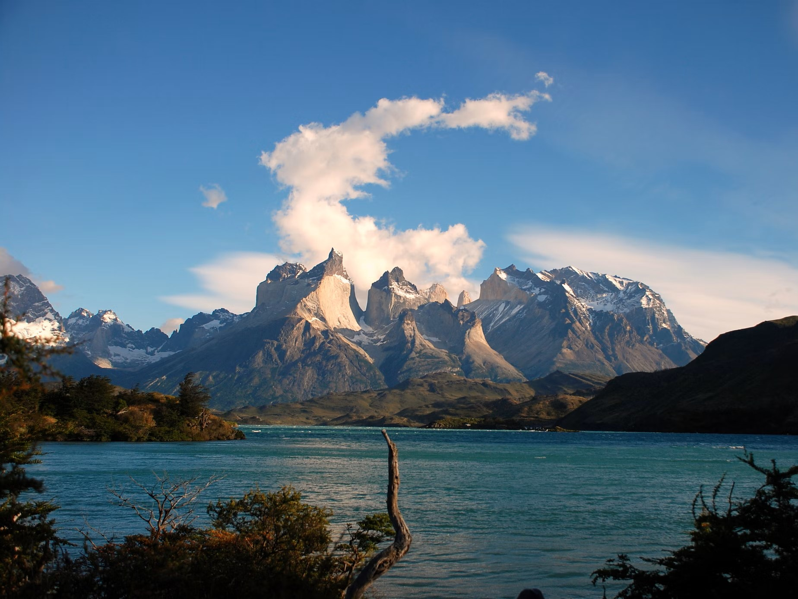
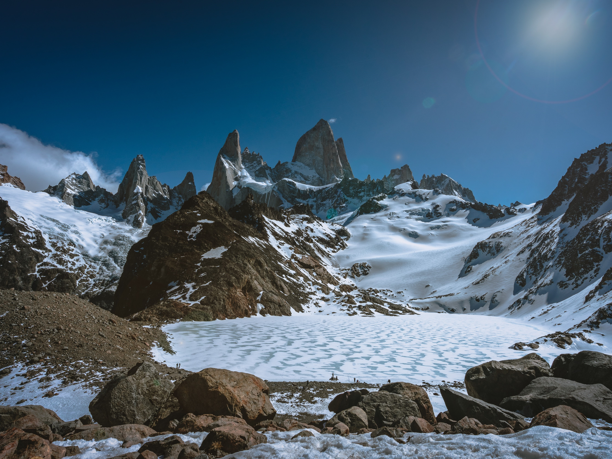
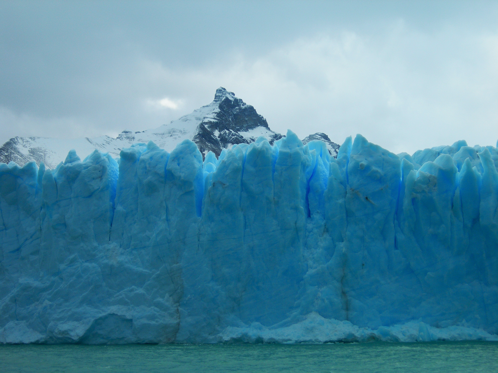
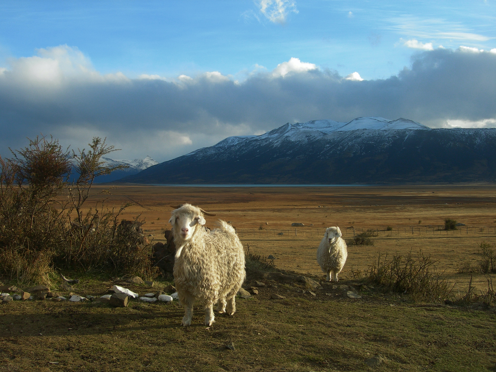
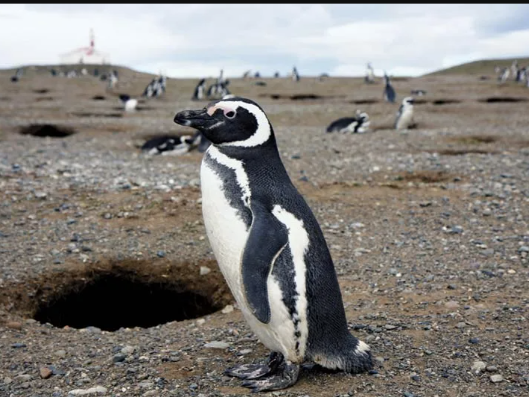
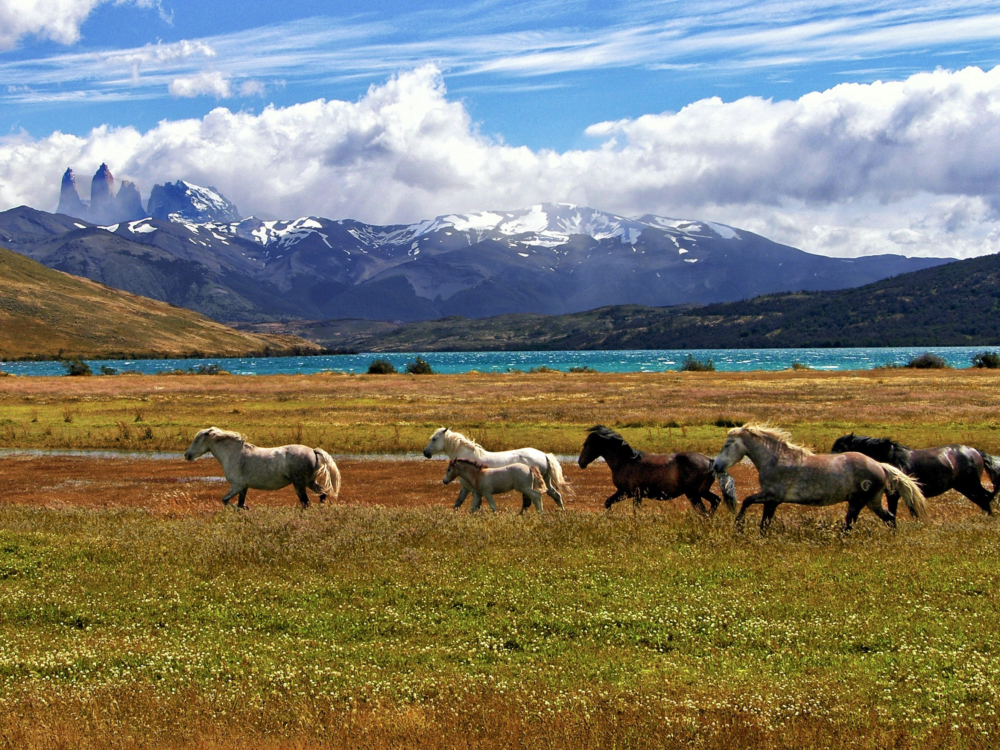

Here you can read about Patagonia - the amazing region in Southern America
Short history
Patagonia (Spanish pronunciation: [pataˈɣonja]) refers to a geographical region that encompasses the southern end of South America, governed by Argentina and Chile. The region comprises the southern section of the Andes Mountains with lakes, fjords, temperate rainforests, and glaciers in the west and deserts, tablelands and steppes to the east. Patagonia is bounded by the Pacific Ocean on the west, the Atlantic Ocean to the east, and many bodies of water that connect them, such as the Strait of Magellan, the Beagle Channel, and the Drake Passage to the south.
The contemporary economy of eastern Patagonia revolves around sheep farming and oil and gas extraction, while in western Patagonia fishing, salmon aquaculture, and tourism dominate. Culturally, Patagonia has a varied heritage, including Criollo, Mestizo, Indigenous, German, Croat, Italian and Welsh influences.
Interesting facts about Patagonia:
- It’s huge – but barely inhabited.
- Patagonians originate from across the world.
- It’s renowned by climbers.
- There are still cowboys out and about in Argentina.
- Patagonia is an open air lab for climate change.
- IT’S GOT PENGUINS. A LOT OF PENGUINS.
Short history of world-wide-known clothing brand.
Patagonia was still a fairly small company when we started to devote time and money to the increasingly apparent environmental crisis. What we began to read—about global warming, the cutting and burning of tropical forests, the rapid loss of groundwater and topsoil, acid rain, the ruin of rivers and creeks from silting-over dams—reinforced what we saw with our eyes and smelled with our noses during our travels.
On January 2012, Patagonia became the first California company to become a benefit corporation—a legal framework that enables mission-driven companies like Patagonia to stay that way as they grow and change. We are also a Certified B Corporation. To qualify as a B Corp, a business must have an explicit social or environmental mission and a legally binding fiduciary responsibility to take into account the interests of workers, the community and the environment, as well as its shareholders. To maintain B Corp certification, we must update and verify our qualifications every three years.
September 2022: the Earth is now our only shareholder. Nearly 50 years after Yvon Chouinard began his experiment in responsible business, ownership of Patagonia is transferred to two new entities: Patagonia Purpose Trust and the nonprofit Holdfast Collective. Every dollar that is not reinvested into Patagonia will be distributed as dividends to protect the planet. “Instead of extracting value from nature and transforming it into wealth, we are using the wealth Patagonia creates to protect the source,” said Chouinard. “I am dead serious about saving this planet.”
Photo examples
|  |  |
Here are the most famous tourist attractions listed:
- Perito Moreno Glacier
- El Calafate
- Glaciarium (museum)
- Monte Fitz Roy
- El Chaltén
- Magellanic penguin
Tourist attractions
In the second half of the 20th century, tourism became an ever more important part of Patagonia's economy. Originally a remote backpacking destination, the region has attracted increasing numbers of upmarket visitors, cruise passengers rounding Cape Horn or visiting Antarctica, and adventure and activity holiday-makers. Principal tourist attractions include the Perito Moreno glacier, the Valdés Peninsula, the Argentine Lake District and Ushuaia and Tierra del Fuego (the city is also a jumping-off place for travel to Antarctica, bringing in still more visitors). Tourism has created new markets locally and for export for traditional crafts such as Mapuche handicrafts, guanaco textiles, and confectionery and preserves.
A spin-off from increased tourism has been the buying of often enormous tracts of land by foreigners, often as a prestige purchase rather than for agriculture. Buyers have included Sylvester Stallone, Ted Turner, and Christopher Lambert, and most notably Luciano Benetton, Patagonia's largest landowner. His "Compañia de Tierras Sud" has brought new techniques to the ailing sheep-rearing industry and sponsored museums and community facilities, but has been controversial particularly for its treatment of local Mapuche communities.
Perito Moreno Glacier
Perito Moreno Glacier is a glacier located in Los Glaciares National Park in southwest Santa Cruz Province, Argentina. It is one of the most important tourist attractions in the Argentine Patagonia. Due to its size and accessibility, Perito Moreno is one of the major tourist attractions in southern Patagonia and the rupture of this glacier is considered one of the most impressive natural spectacles in the world.
El Calafate
El Calafate, also known as Calafate, is a city in Patagonia, Argentina. It is situated on the southern border of Lake Argentino, in the southwest part of the Santa Cruz Province, about 320 kilometres (200 mi) northwest of Río Gallegos. The name of the city is derived from a little bush with yellow flowers and dark blue berries that is very common in Patagonia: the calafate (Berberis buxifolia); the word comes from the word calafate, which is Spanish for 'caulk'.
Glaciarium (museum)
The centre is dedicated to ice and glaciers, and is designed to educate visitors about these natural phenomena in depth. The scientific director is glaciologist Pedro Skvarca. The building is formed by a main hall and three exhibitions halls, a total of 2,500 square metres (27,000 sq ft). Two halls house the permanent glaciological exhibits that include dioramas, multimedia, 3D models, and other modern resources. The third hall is a cultural venue and movie theatre where 3D documentaries and other films are screened.
Monte Fitz Roy
The first Europeans recorded as seeing Mount Fitz Roy were the Spanish explorer Antonio de Viedma and his companions, who reached the shores of Viedma Lake in 1783. Argentine explorer Francisco Moreno saw the mountain on 2 March 1877; he named it Fitz Roy in honour of Robert FitzRoy who, as captain of HMS Beagle, had travelled up the Santa Cruz River in 1834 and charted large parts of the Patagonian coast.
El Chaltén
It is located on the riverside of Rio de las Vueltas, within the Los Glaciares National Park (section Reserva Nacional Zona Viedma) near the base of Cerro Torre and Cerro Fitz Roy spires, both popular for climbing. It is 220 km north of El Calafate. It is also a popular base for hiking numerous trails, such as those to the base of surrounding peaks and glacial lakes, such as Laguna Torre and Laguna de los Tres (near the base of Fitz Roy).
Magellanic penguin
Magellanic penguin, (Spheniscus magellanicus), species of penguin (order Sphenisciformes) characterized by the presence of a broad crescent of white feathers that extends from just above each eye to the chin, a horseshoe-shaped band of black feathers that cuts across the white feathers on the chest and abdomen, and a small but noticeable region of pink flesh on the face. Magellanic penguins are named for Portuguese explorer Ferdinand Magellan; however, Italian explorer Antonio Pigafetta, who traveled with Magellan during his attempt to circumnavigate the globe in 1520, is credited with sighting the species.
Here is a gallery of nature in the Patagonia region.
|  |  |  |
|---|---|---|
 |
 |  |
 |
 |  |
Why it is named so?
The name Patagonia comes from the word patagón.Magellan used this term in 1520 to describe the native tribes of the region, whom his expedition thought to be giants. The people he called the Patagons are now believed to have been the Tehuelche, who tended to be taller than Europeans of the time. Argentine researcher Miguel Doura observed that the name Patagonia possibly derives from the ancient Greek region of modern Turkey called Paphlagonia, possible home of the patagon personage in the chivalric romances Primaleon printed in 1512, ten years before Magellan arrived in these southern lands. This hypothesis was published in a 2011 New Review of Spanish Philology report.